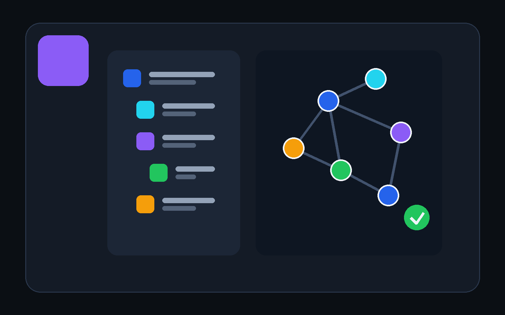
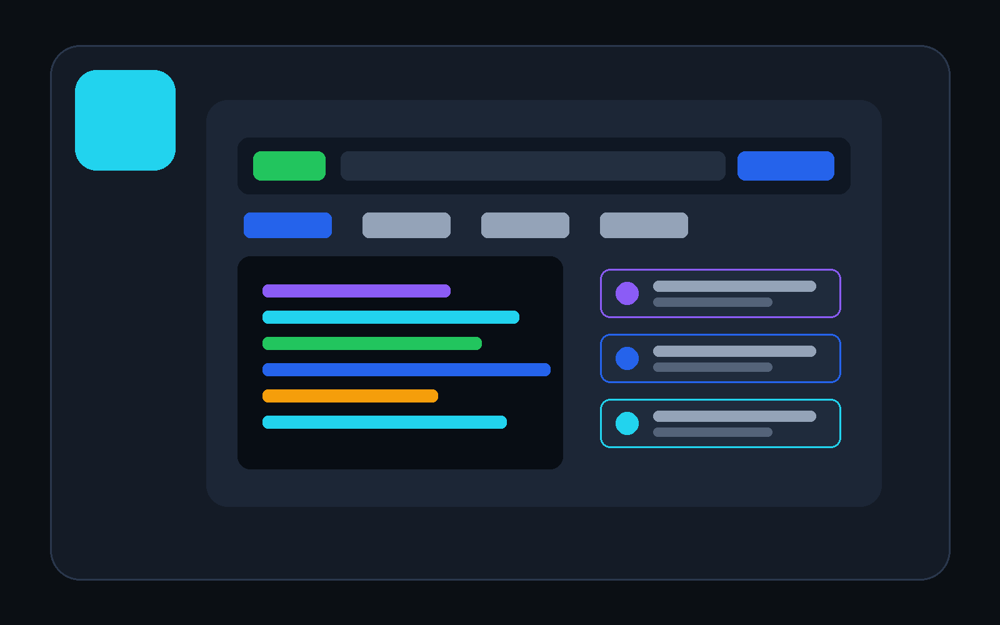
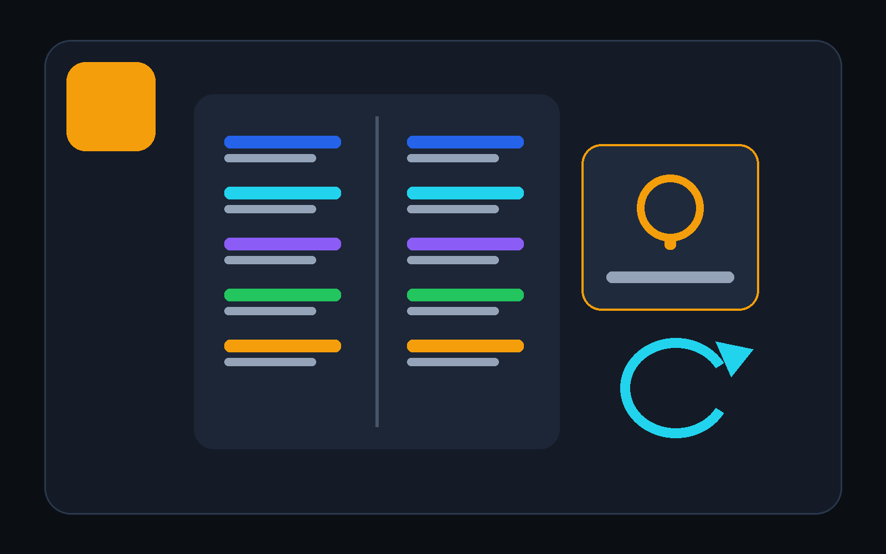
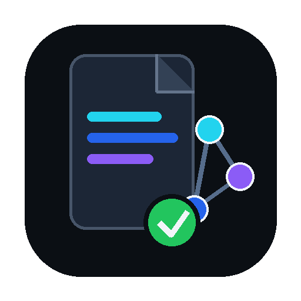

Knowledge Workspace
Register folders, edit Markdown, inspect properties and outlines, create links, view backlinks, and navigate local or workspace graphs.
DevDesk brings Markdown workspaces, backlinks, graphs, Structured Knowledge/OKF, API testing, OpenAPI, local Git inspection, and focused utilities into one Android and Windows workspace.


Register folders, edit Markdown, inspect properties and outlines, create links, view backlinks, and navigate local or workspace graphs.

Build saved requests, environments, protected variables, assertions, extraction rules, history, examples, and OpenAPI-generated collections.

Use JSON, JWT, Regex, Base64, URL, Timestamp, UUID, Diff, README, snippets, backup, search, and contextual manuals.
DevDesk keeps Markdown as the source of truth while helping you add metadata, indexes, links, trust signals, lifecycle information, and safe migration previews.

Use plain folders, Markdown, YAML frontmatter, and standard links. No proprietary database is required.
Create concepts yourself or let DevDesk analyze an existing folder and prepare deterministic changes for review before applying them.
Every saved relationship remains a Markdown link. Nodes and backlinks are derived from files rather than stored as hidden graph-only data.
The website does not claim that a package exists until the developer publishes it.